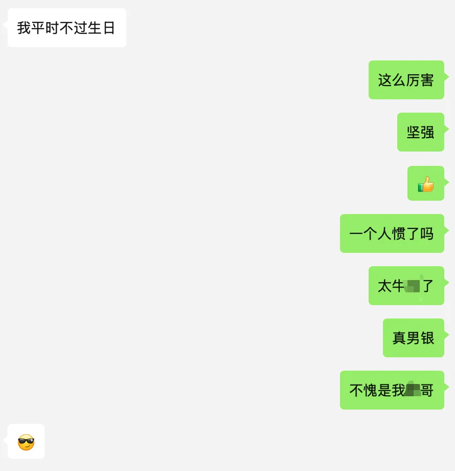

大家都是怎么过生日的？我是怎么过生日的？
在昨天晚上，我收到了我妈发来的消息，说我明天过生日，我感到诧异，看了看日历算了算确实是我的生日。
好像每年都这样，我总是记不住自己的生日，而且已经很多年没有怎么庆祝了。与其说是丧失了对于生活的热情，对于活动的仪式感，不如说我更加有着自己的方向。
我觉得我每天对于生活有着足够的热情，有着我的追求：体现在敲代码，做项目，学习新技术，做视频分享。在其中投入的情感和精力过多以至于弱化了其他自己觉得不太必要的情感。
仪式感我觉得我也是一直又的，看到喜欢的风景就会拍照片，把我的代码码得规规矩矩，网站做的漂漂亮亮的，好吧，怎么感觉我扯什么事情都要扯到代码身上。好像除了我的代码我就没有其他的生活一样，其实我也有锻炼身体，买一些可爱的小玩具，和同学有机会出去转转啊什么的，也会去发掘一些其他的爱好。
我在想只有我对于生日是这种冷淡的感觉吗，我又问了我的一些朋友他们是怎么过生日的，好家伙，问了才知道有的朋友是生日都不过的。不过虽然我每年都过生日，但是我过生日唯一做的稳定的事情就是之前是发一个QQ空间，现在是发一个朋友圈了。并且内容也越来越少，就简单祝自己生日快乐。我在想，这是不是成熟。

其实我们经常可以看到网上别人精致的生活，有时候可能会觉得自己可能没有那么出彩精彩。我觉得其实没关系的，我们自己才是自己世界的主角，只要我们热爱我们的生活，用怎样的方式去度过其实都可以。
我感觉我每一天都对生活挺热情的，所以生日，其实也没啥特别想要的。平时有想吃的就吃了，想要的就买了，不过其实也没啥特别想吃想买的。唯一每天都想要然而没有得到的，我想只有早睡早起了。每天都是不知不觉就到了12点。刚好今天是生日，那就许个愿吧，希望以后可以早睡早起。
所以，大家是怎样过生日的呢？有没有对明天充满期待，对今天充满激情呢？希望我们一起加油变好，努力奋斗。